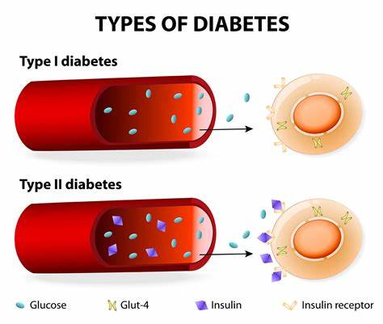

Managing Diabetes Effectively
Diabetes is a chronic condition that affects how your body processes glucose. Proper management is crucial to prevent complications.
Diabetes is a chronic disease that occurs either when the pancreas does not produce enough insulin or when the body cannot effectively use the insulin it produces. Insulin is a hormone that regulates blood glucose. Hyperglycaemia, also called raised blood glucose or raised blood sugar, is a common effect of uncontrolled diabetes and over time leads to serious damage to many of the body's systems, especially the nerves and blood vessels.
Symptoms:
- feeling very thirsty
- needing to urinate more often than usual
- blurred vision
- feeling tired
- losing weight unintentionally
In 2022, 14% of adults aged 18 years and older were living with diabetes, an increase from 7% in 1990. More than half (59%) of adults aged 30 years and over living with diabetes were not taking medication for their diabetes in 2022. Diabetes treatment coverage was lowest in low- and middle-income countries.
In 2021, diabetes was the direct cause of 1.6 million deaths and 47% of all deaths due to diabetes occurred before the age of 70 years. Another 530 000 kidney disease deaths were caused by diabetes, and high blood glucose causes around 11% of cardiovascular deaths (1).
Since 2000, mortality rates from diabetes have been increasing. By contrast, the probability of dying from any one of the four main noncommunicable diseases (cardiovascular diseases, cancer, chronic respiratory diseases or diabetes) between the ages of 30 and 70 decreased by 20% globally between 2000 and 2019.
 Type 1 diabetesType 1 diabetes (previously known as insulin-dependent, juvenile or childhood-onset) is characterized by deficient insulin production and requires daily administration of insulin. In 2017 there were 9 million people with type 1 diabetes; the majority of them live in high-income countries. Neither its cause nor the means to prevent it are known.
Type 2 diabetesType 2 diabetes affects how your body uses sugar (glucose) for energy. It stops the body from using insulin properly, which can lead to high levels of blood sugar if not treated.
Type 2 diabetes is often preventable. Factors that contribute to developing type 2 diabetes include being overweight, not getting enough exercise, and genetics.
Early diagnosis is important to prevent the worst effects of type 2 diabetes. The best way to detect diabetes early is to get regular check-ups and blood tests with a healthcare provider.
Gestational diabetesGestational diabetes is hyperglycaemia with blood glucose values above normal but below those diagnostic of diabetes. Gestational diabetes occurs during pregnancy.
Women with gestational diabetes are at an increased risk of complications during pregnancy and at delivery. These women and possibly their children are also at increased risk of type 2 diabetes in the future.
Gestational diabetes is diagnosed through prenatal screening, rather than through reported symptoms.
PreventionLifestyle changes are the best way to prevent or delay the onset of type 2 diabetes.
To help prevent type 2 diabetes and its complications, people should:
- reach and keep a health body weight
- stay physically active with at least 150 minutes of moderate exercise each week
- eat a healthy diet and avoid sugar and saturated fat
- not smoke tobacco
Early diagnosis can be accomplished through relatively inexpensive testing of blood glucose. People with type 1 diabetes need insulin injections for survival.
One of the most important ways to treat diabetes is to keep a healthy lifestyle
Some people with type 2 diabetes will need to take medicines to help manage their blood sugar levels. These can include insulin injections or other medicines. Some examples include:- metformin
- sulfonylureas
- sodium-glucose co-transporters type 2 (SGLT-2) inhibitors.
- Along with medicines to lower blood sugar, people with diabetes often need medications to lower their blood pressure and statins to reduce the risk of complications.